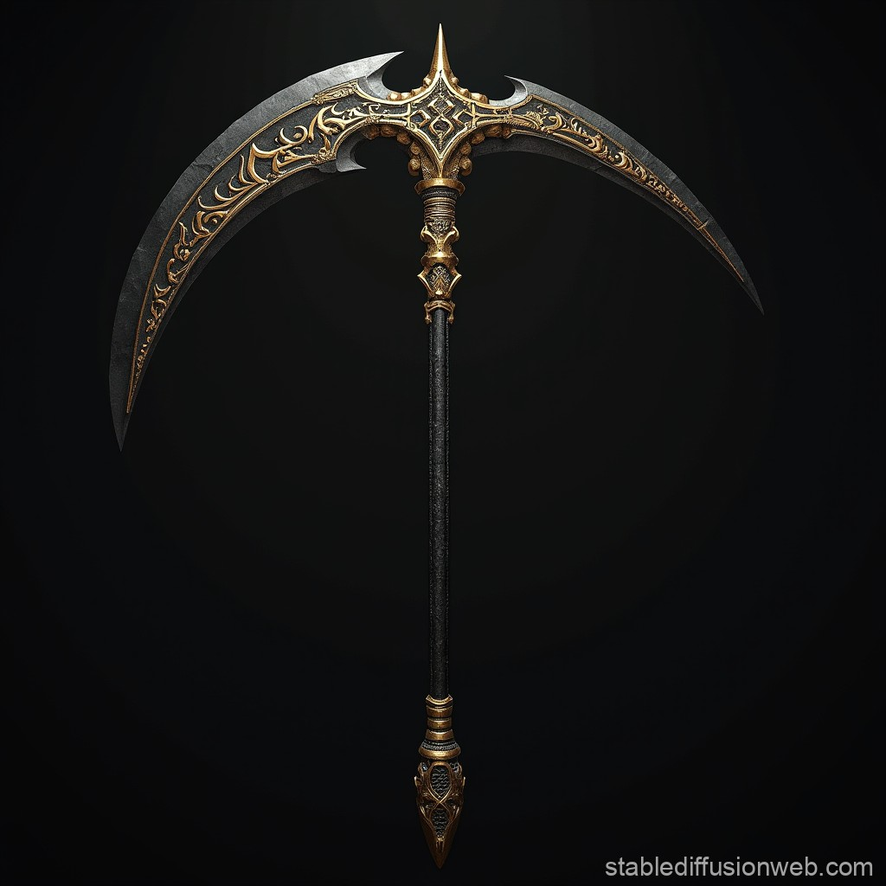
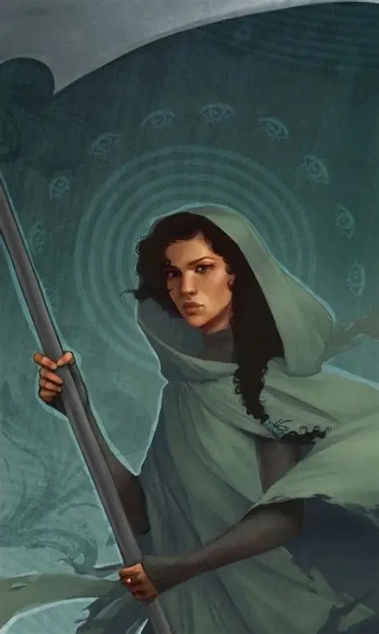
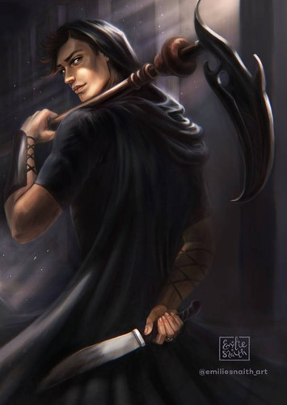

Power without humility
Some scythes begin to see their authority as proof of superiority rather than a burden. The duty to make life-ending choices becomes an excuse to control others.
THUNDERHEAD NETWORK // HUMANITY ARCHIVE
CLASSIFICATION: POST-MORTAL SOCIETY
Death has been conquered.
It has not been abolished.
Welcome to a world without natural death—where the only people permitted to end a life are those sworn to carry that burden.
ACCESS THE RECORD ↓
ARTIFACT 001 / THE SCYTHE01 / THE WORLD AFTER MORTALITY
A PERFECTED CIVILIZATION?
In Scythe, humanity has overcome disease, aging, and death. People can be revived after fatal injuries, and age can be reset. The Thunderhead, an immensely advanced artificial intelligence, manages much of society and keeps everyday life orderly.
But a population that cannot die naturally would keep growing. To control that growth, society created the Scythedom: an order of people entrusted with the permanent ending of lives. Scythes are outside the Thunderhead's direct control, and their decisions carry extraordinary moral weight.
When death is no longer inevitable, choosing who dies becomes the most dangerous power in the world.
02 / THE SACRED DUTY
THE SCYTHEDOM
Scythes are selected and trained to glean—society's term for permanently ending a person's life. Their authority is meant to be exercised with restraint, reflection, and accountability. A scythe's ring identifies their office; their robes and chosen name distinguish them from ordinary citizens.
Gleaning is not supposed to be entertainment, revenge, or a shortcut to power. Scythes keep journals, study the weight of their decisions, and are expected to treat their duty seriously. Their traditions exist because a decision that cannot be undone demands more than personal preference.
03 / ETHICAL BREACH
WHEN THE KEEPERS FAIL
The Scythedom is built around a grim public service, but its members are still human—with pride, fear, ambition, and the ability to rationalize cruelty.
Some scythes begin to see their authority as proof of superiority rather than a burden. The duty to make life-ending choices becomes an excuse to control others.
Where restraint should guide the Scythedom, corrupt gleaners may embrace fear, excess, or public performance. A solemn duty is twisted into something cruel.
Rules can preserve responsibility, but they can also shield wrongdoing when people defend the institution instead of confronting its failures.
Immortality does not make a society morally immortal.

SUBJECT A / APPRENTICE04 / SUBJECT PROFILE
CITRA TERRANOVA
APPRENTICE → SCYTHE
Citra Terranova never wants to become a scythe. Her path changes when she is chosen to apprentice under Scythe Faraday, alongside Rowan Damisch. Sharp-minded, outspoken, and unwilling to treat gleaning as a detached exercise, Citra questions the morality of the system even as she learns to work within it.
As Scythe Anastasia, she becomes associated with a more compassionate approach to the duty—one that insists the person being gleaned should be treated with dignity. Her story asks whether someone can hold extraordinary power without losing sight of the lives behind every decision.
05 / SUBJECT PROFILE
ROWAN DAMISCH
APPRENTICE → VIGILANTE
Rowan is chosen to apprentice under Scythe Faraday with Citra. His training forces him to confront the human cost of gleaning and the difference between obeying a system and doing what is right.
As Scythe Lucifer, Rowan becomes a vigilante figure who targets corrupt scythes. He acts outside the official order because he believes the Scythedom has failed to restrain its worst members. His methods are dangerous and morally complicated: his fight against corruption raises difficult questions about justice, accountability, and who gets to decide what is deserved.

SUBJECT B / THE OUTLIEREND OF PUBLIC RECORD
Archive closed. Question everything.
RETURN TO SYSTEM OVERVIEW ↑